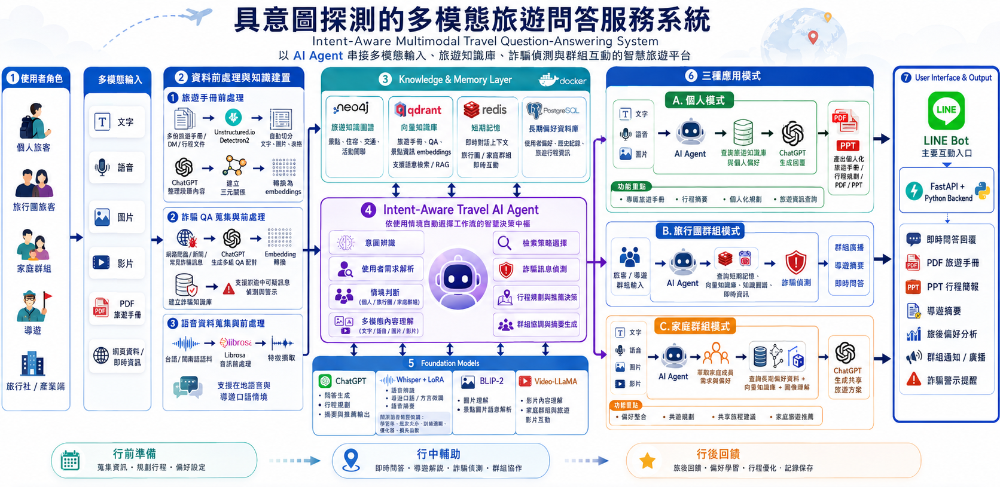
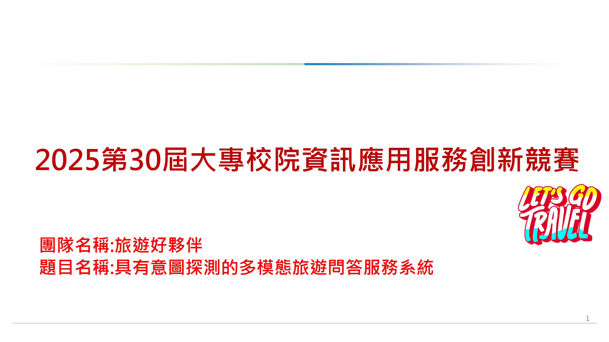

東森購物合作
LLM 客戶 Persona 分析系統
客服或行銷人員匯入顧客對話後，系統整理顧客的需求、偏好、消費習慣與互動狀態，輸出可供後續查詢與分析的客戶 Persona。
匯入客服或銷售對話→辨識並更新顧客資訊→取得 Persona 與 Excel 報表
- 核心技術
- LLM-based Information Extraction、Structured Output、Persona Schema、Incremental Update、Python、Pandas。
- 公司效益
- 將需要逐篇閱讀的長對話轉為一致、可搜尋及可持續更新的客戶資料；單筆約 2 萬中文字測試可於 30–50 秒完成整理，依當時模型用量估算成本約 NT$2.20。
- 我的負責
- 設計 Persona 提取演算法、欄位規則與更新邏輯，完成後端分析、批次處理及 JSON／Excel 輸出；前端由團隊成員負責。
中小型商家透過 LINE 提交商品圖片與活動資訊，系統依序產生文案、旁白、字幕與影片，商家可預覽、要求重新生成或直接交付。
商家上傳商品素材→AI 產生文案與影音→確認、重製或交付
- 核心技術
- n8n Workflow Automation、Prompt Engineering、TTS、Multimodal Content Generation、Human-in-the-loop、State Management。
- 公司效益
- 將分散於多個工具的素材整理、生成、確認與交付整合為一條可追蹤流程。以每月 20 支素材、每支人工 3–5 小時的中小企業情境試算，可釋放約 60–100 人時／月。
- 我的負責
- 主導需求拆解、整體流程架構與核心工作流實作，負責生成服務整合、批次狀態、資料模型及使用者資料隔離設計。
使用者在會議中與 AI 即時語音互動，多個 Agent 依角色分工理解情境、查詢知識、提供工具建議與決定發言時機；會後保留逐字稿與任務資訊。
進行即時語音會議→多個 Agent 分工理解與判斷→保存逐字稿、任務與追蹤資訊
- 核心技術
- Multi-Agent、Realtime Voice Agent、RAG、Function Calling／Tool Use、Conversation Memory、Workflow Automation。
- 公司效益
- 將討論脈絡、知識查詢與待辦集中在同一流程，減少會後資訊散落、重複整理與責任遺漏。
- 我的負責
- 負責 Multi-Agent 核心框架、代理角色與協作介面設計，以及 Realtime 語音互動與會議資料流程整合。
智慧旅遊產學提案
Agentic RAG 行程建議服務
使用者以自然語言提出目的地、時間、偏好與限制，系統整合旅遊知識及即時資訊，產生可持續調整的行程建議。
描述旅遊需求→補齊資訊並搜尋知識→產生並持續調整行程

多模態旅遊 AI Agent 系統架構

多模態旅遊問答系統提案簡報（2025 第 30 屆大專校院資訊應用服務創新競賽）
- 核心技術
- Intent Classification、Slot Filling、Agentic RAG、Hybrid Retrieval、Knowledge Graph、Multi-turn Memory、Tool Use。
- 公司效益
- 讓旅遊服務理解口語化需求並組合不同資料來源，減少固定條件搜尋與人工彙整資訊的負擔，同時保留來源追溯與行程調整能力。
- 我的負責
- 負責 intent-driven RAG、知識融合、slot filling、回應生成，以及安全、效能與驗測流程的架構規劃。
比較不同模型對肝癌病人存活風險的分析能力，並找出可能影響模型判斷的重要特徵。
整理研究資料→比較存活分析模型→檢視表現、特徵與限制
- 核心技術
- Survival Analysis、CoxPH、Random Survival Forest、DeepSurv、C-index、SHAP。
- 研究效益
- 建立可重複比較模型與解釋結果的分析流程，協助研究團隊判斷資料與模型限制；成果不作臨床部署宣稱。
- 我的負責
- 負責資料前處理、五類模型建置與比較、評估指標及特徵解釋，並整理小樣本與臨床應用限制。